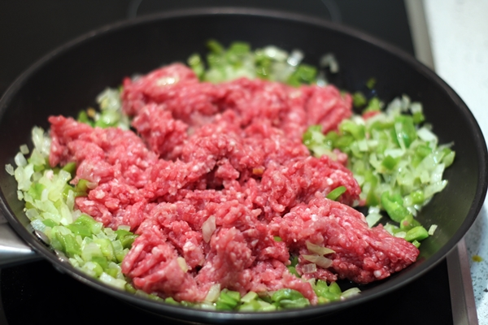
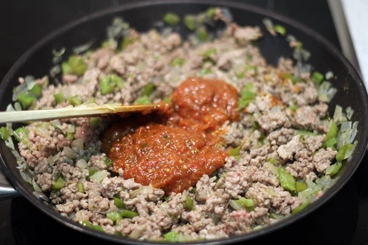
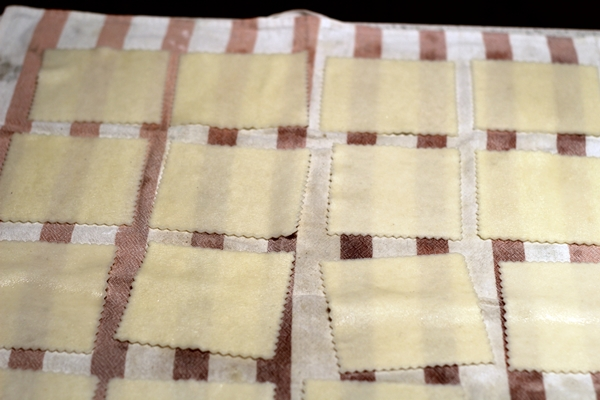

Para hacer canelones caseros comenzaremos con el relleno. Pochamos la cebolla y el pimiento verde a fuego lento.

Una vez pochado agregamos la carne picada, salpimentamos
Agregamos la salsa de tomate casera. Dejamos cocinar unos cuatro o cinco minutos, retiramos del fuego y reservamos.
Por otra parte cocemos las láminas de pasta como indique el fabricante. En este caso yo las he cocido con un chorrito de aceite para que no se peguen.
Normalmente la pasta no se le suele echar aceite porque sino la salsa no se adhiere bien con la pasta pero en este caso para que no se peguen entre unas y otras echaremos aceite en el agua.
Una vez que lo tengamos ya cocido la ponemos en un paño de algodón y procedemos a rellenarlos. Ponemos una pequeña cantidad de carne en la lámina de pasta y cerramos con mucho cuidado.
Con el horno precalentado, colocamos en una fuente de horno todo los canelones formados y cubrimos con la salsa bechamel y con queso rallado.
La receta de la bechamel os la dejo para que podáis hacerla y seguir los consejos que indico en el post.
Introducimos al horno a 200º durante unos 10 minutos y terminamos los últimos 3 minutos con el gratinador.